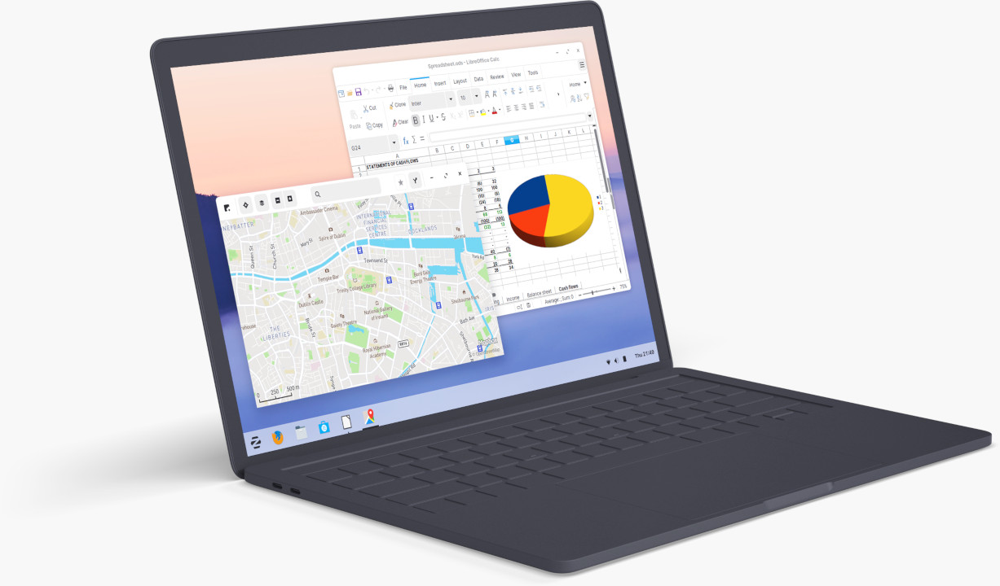

<

Zorin OS 15.3
Core
The core essentials.
The standard edition for most modern computers. Includes helpful apps to get started with your computer.
LibreOffice (compatible with Microsoft Office).
Windows & Touch desktop layouts only.
Useful accessories and utilities.
download
free